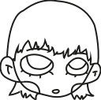

✶ Je m’appelle Ines Dalsbaek, je suis étudiante en design web. J’aime toucher à différents champs artistiques et les relier entre eux. J’aime raconter des histoires avec des images, des écrits, des dessins, internet ou mon imagination. ✶
Du dessin
, en passant par la photographie
 , l’écriture
, l’écriture
 , la vidéo
, la vidéo
 ou encore le design
ou encore le design
 , j’essaie de développer un profil
« touche à tout »
en m’intéressant à ce qui m’entoure
, j’essaie de développer un profil
« touche à tout »
en m’intéressant à ce qui m’entoure
 . À la suite d’études en
arts appliqués,
design et
[ cinéma
], j’apprends
actuellement le
design web en Belgique.
Je suis actuellement à la recherche d’un stage de trois mois
pour me familiariser avec le monde professionnel du design
web.
. À la suite d’études en
arts appliqués,
design et
[ cinéma
], j’apprends
actuellement le
design web en Belgique.
Je suis actuellement à la recherche d’un stage de trois mois
pour me familiariser avec le monde professionnel du design
web.

-
Web Design ✶
Bienvenue sur Internet.
Une sélection des mes projets web, sites et pages en tous genres au travers desquels je me forge une première identité sur Internet. Ce sont pour moi différentes manières d’appréhender le web design en tant qu’outil pratique, informatif, narratif, poétique ou expérimental. C’est aussi ce portfolio, comme espace personnel et lien entre mes travaux.
-
Objets ✶
Un objet doit-il forcément être utile pour exister?
Et si on pouvait attribuer d’autres fonctions qui seraient tout aussi suffisantes à un produit. Ainsi les objets de cette collection, tantôt poétiques, tantôt pratiques, s’ils ne se définissent pas par leur indispensabilité, proposent un autre regard à la notion d’utilité généralement attendue.
-
Photographie ✶
Des séries de photographies et photomontages…
…Pour porter un autre regard, une intention nouvelle, raconter un quotidien que l’on connait tant, auquel on ne porte plus attention: un garçon qui rentre chez lui, des gens à leurs fenêtres. Et pour inventer aussi, des endroits fabriqués ou des hommes presqu’animaux
-
Dessins ✶
Travail sur le design de personnages.
Inspirée par des artistes tels qu’ Aya Takano, Vewn, Marjane Satrapi et bien d’autres, voici une série de personnages dessinés sur papier et sur tablette à travers laquelle j’expérimente différents styles graphiques et différents supports de réalisation.
-
Dans la peau de ✶
On dit souvent de se mettre « à la place de ».
Imaginer comment pense l’autre, s’informer sur lui/elle pour comprendre ses envies, ses attentes. Les projets présentés ici ont fait l’objet, pour leur réalisation d’un travail d’enquête en amont afin de tenter de répondre au mieux aux besoins d’un public dans un contexte précis.
-
État limite ✶
Qu’est-ce que la « limite »?
La séparation entre le bon fonctionnement et la défaillance? Ce qui ne peut ou ne doit être dépassé ou bien le point ultime à atteindre? L’état-limite, c’est ici ce moment étrange de latence, un passage entre le connu et l’inconnu, la mesure et l’excès, où l’on n’est ni d’un côté ni de l’autre.
-
Observer le réel ✶
Attention aux détails.
Le « réel », ce qui n’est pas un produit de la pensée. Parler du réel, pour informer, instruire, apprendre. Mais aussi pour repenser ce réel, le décrire à travers ses détails banals et insolites, ses situations connues de tous et vécues différemment à chaque fois. Raconter le réel, un exercice pratiqué tous les jours, tant pour sortir de celui-ci que pour s’y ancrer encore plus.
-
Faits-main ✶
Fabriqués avec amour.
Une sélection de travaux où le processus de fabrication est autant, peut-être plus affirmé que le résultat car il relève de l’expérimentation pour appréhender de diverses manières la technique. C’est par le test aussi bien réfléchi qu’aléatoire que les étapes se décident. « Faits main », ce sont des projets fabriqués tant dans leur final qu’au moment de la réalisation.